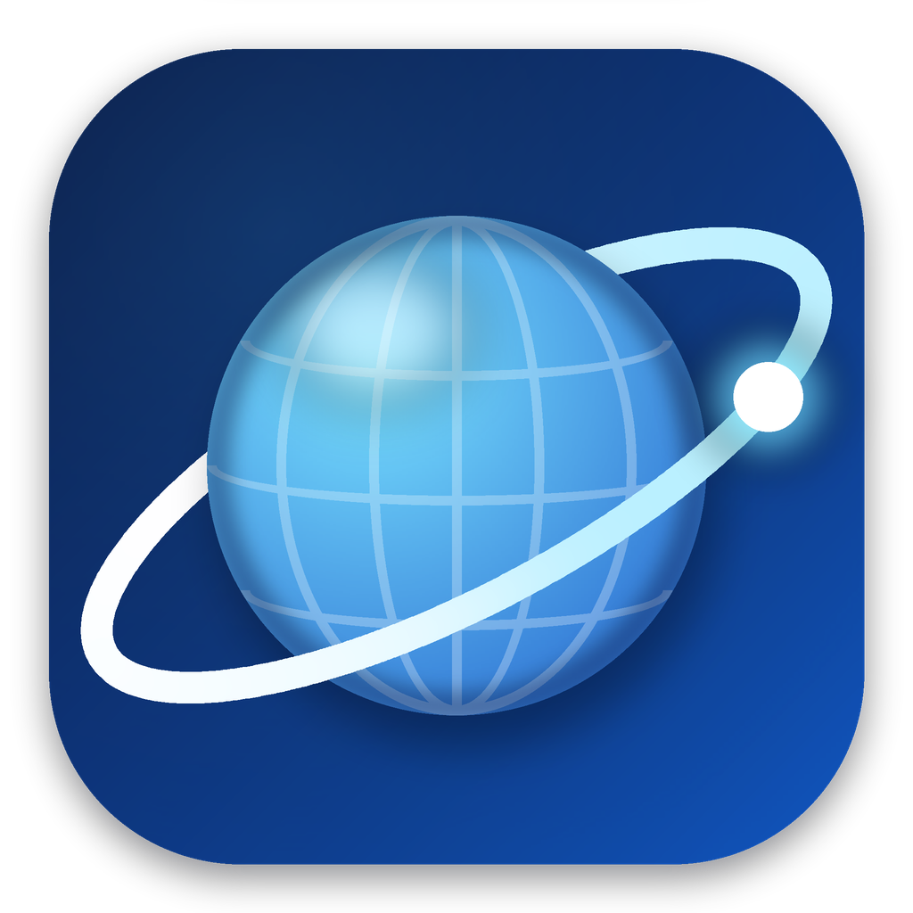

0
حفظ
أبداً لهذا الموقع
ليس الآن
ترجمة
إظهار الأصل
✕
↑
↓
✕

الإعدادات
🕶 أنت في وضع التصفح الخفي: لن يُحفظ السجل ولا الكوكيز ولا كلمات المرور، وكل شيء يُحذف عند إغلاق التبويب.
G
o
o
g
l
e
وضع AI
التصفح المتخفي
جميع الحقوق محفوظة © 2026
Ahmed Gamal Elshafey
تبويب جديد
Ctrl+T
🕶 تبويب تصفح خفي
Ctrl+Shift+N
تنويم التبويبات غير النشطة (توفير الذاكرة)
السجل
Ctrl+H
المفضلة
🎬 تحميل فيديو أو صوت MP3 من الصفحة
📖 وضع القراءة
F9
🖼 الفيديو في نافذة صغيرة
📸 لقطة شاشة للصفحة
Ctrl+Shift+S
💬 الشريط الجانبي (واتساب وماسنجر وتليجرام)
التنزيلات
Ctrl+J
كلمات المرور
🧩 الإضافات
🛒 سوق إضافات كروم
🌐 المترجم
بحث في الصفحة
Ctrl+F
تكبير
Ctrl++
تصغير
Ctrl+-
طباعة
Ctrl+P
حفظ الصفحة
ملء الشاشة
F11
أدوات المطور
F12
الإعدادات
حول متصفح العالمي